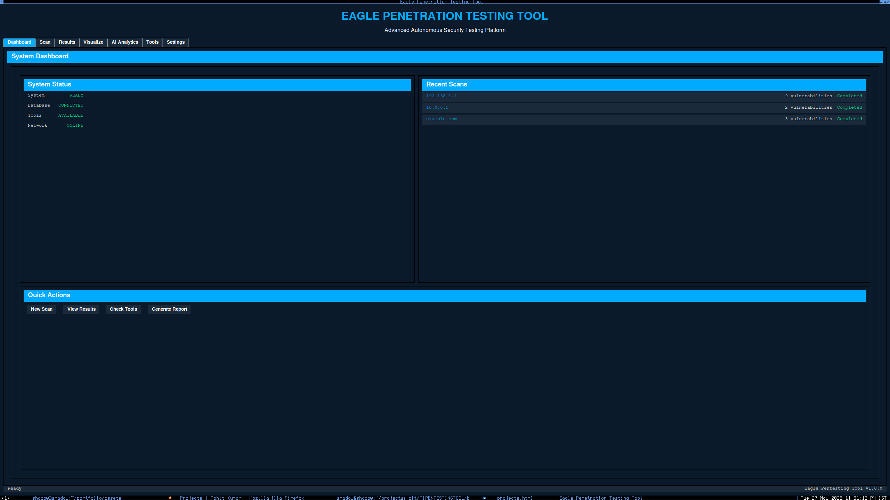

Active

Automated Penetration Testing Tool
Advanced AI-powered web vulnerability scanner with machine learning-based result analysis. Provides intelligent attack vector predictions and comprehensive security assessments.
- AI-powered vulnerability detection
- Automated exploit generation
- Comprehensive reporting
- Machine learning predictions
Open Source
500+ Downloads